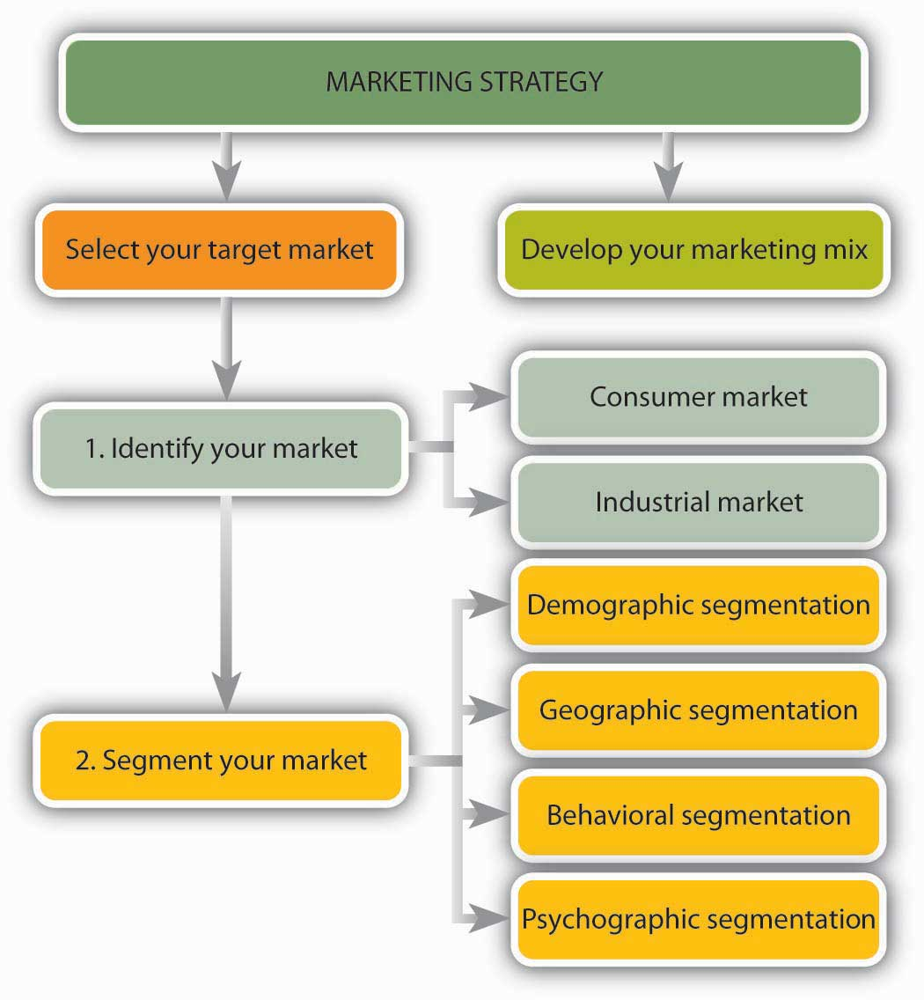
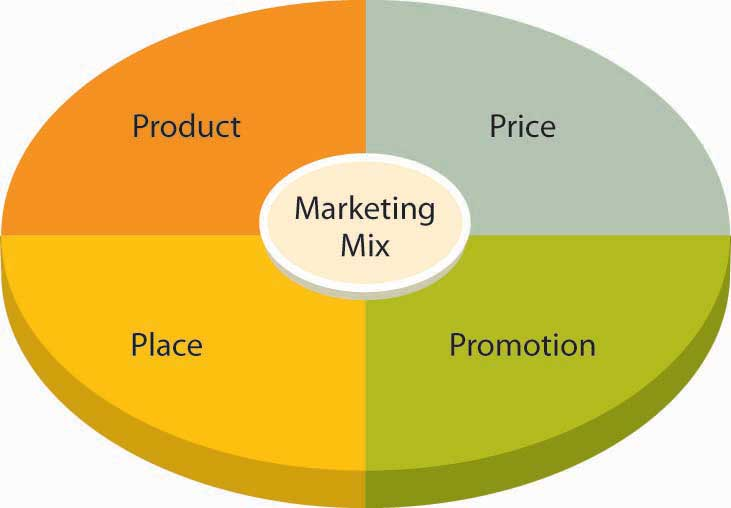
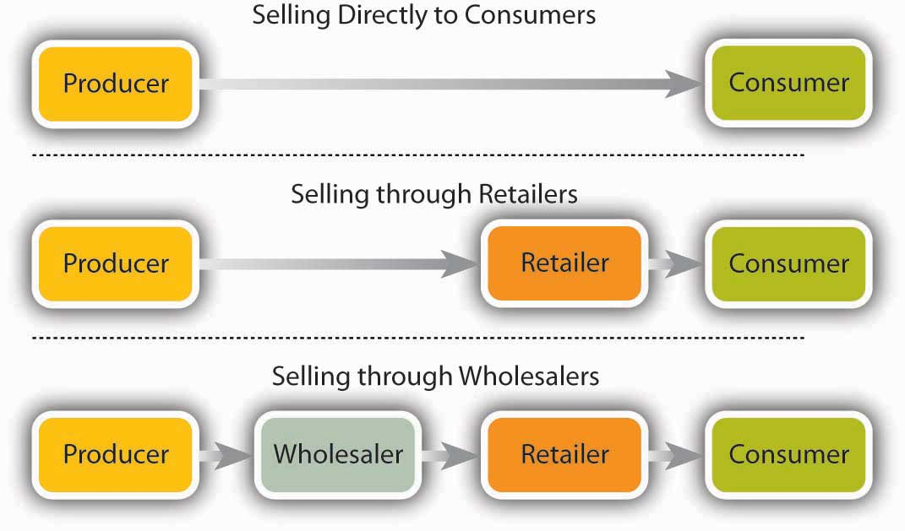
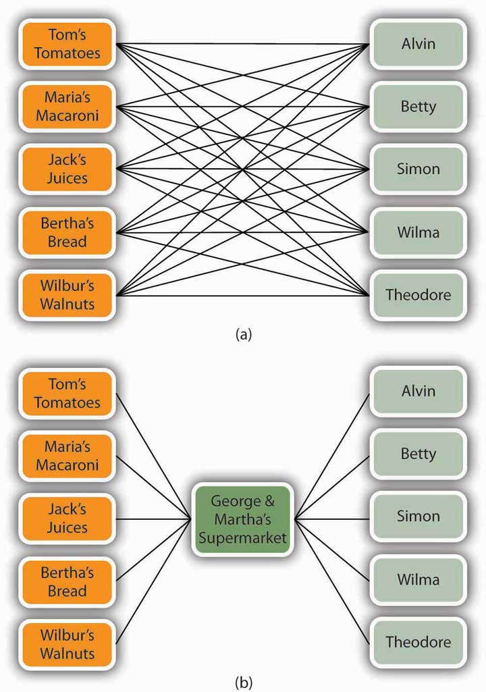
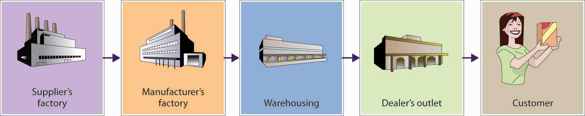
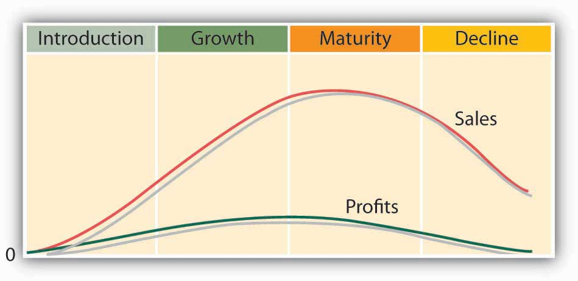
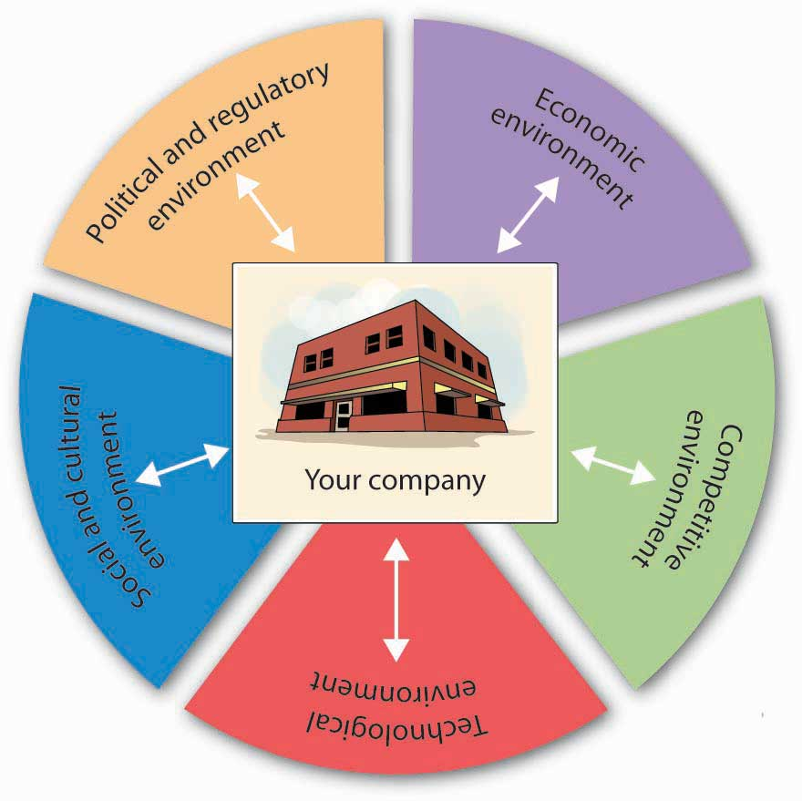
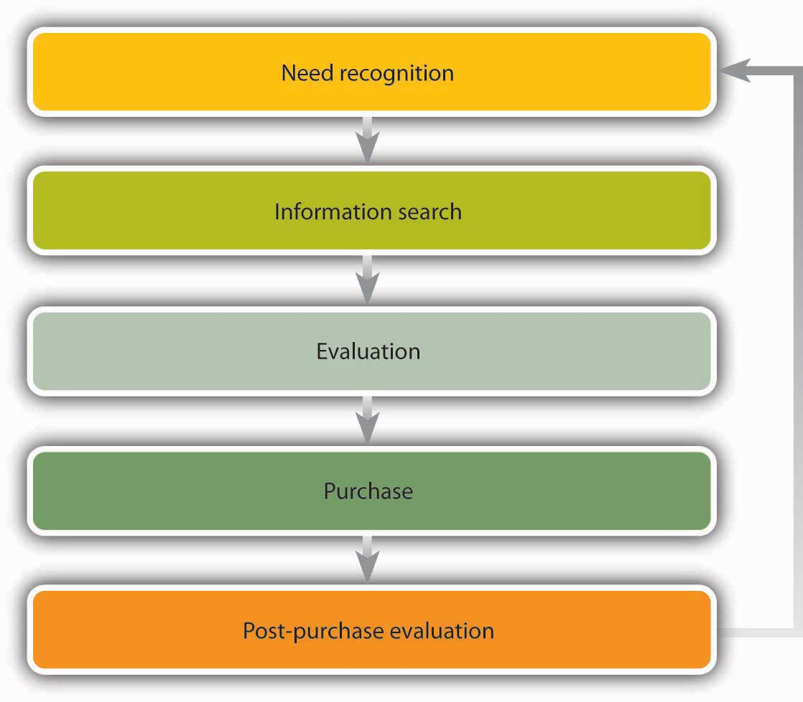

Mark Tilden used to build robots for NASA to trash on Mars, but after seven years of watching the results of his work meet violent ends forty-six thousand miles from home, he decided to specialize in robots for earthlings. He left the space world for the toy world and teamed up with Wow Wee Toys Ltd. to create “Robosapien,” an intelligent robot with an attitude.Wow Wee Toys, “Robosapien: A Fusion of Technology and Personality,” http://www.wowwee.com/robosapien/robo1/robomain.html (accessed May 21, 2006). The fourteen-inch-tall robot, which is operated by remote control, has great moves: In addition to the required maneuvers (walking forward and backward and turning), he dances, raps, and gives karate chops. He can pick up (fairly small) stuff and even fling it across the room, and he does everything while grunting, belching, and emitting other bodily sounds.
Figure 9.1
Robosapien is a robot with attitude.
What does Robosapien have to do with marketing? The answer is fairly simple: Though Mark Tilden is an accomplished inventor who has created a clever product, Robosapien wouldn’t be going anywhere without the marketing expertise of Wow Wee (certainly not forward). In this chapter, we’ll look at the ways in which marketing converts product ideas like Robosapien into commercial successes.
When you consider the functional areas of business—accounting, finance, management, marketing, and operations—marketing is the one you probably know the most about. After all, as a consumer and target of all sorts of advertising messages, you’ve been on the receiving end of marketing initiatives for most of your life. What you probably don’t appreciate, however, is the extent to which marketing focuses on providing value to the customer. According to the American Marketing Association, marketingSet of processes for creating, communicating, and delivering value to customers and for improving customer relationships. is a set of processes for creating, communicating, and delivering value to customers and for improving customer relationships.American Marketing Association, “Marketing Glossary Dictionary,” http://www.marketingpower.com/mg-dictionary.php? (accessed May 21, 2006).
In other words, marketing isn’t just advertising and selling. It includes everything that organizations do to satisfy customer needs:
Not surprisingly, marketing is a team effort involving everyone in the organization. Think about a typical business—a local movie theater, for example. It’s easy to see how the person who decides what movies to show is involved in marketing: he or she selects the product to be sold. It’s even easier to see how the person who puts ads in the newspaper works in marketing: he or she is in charge of advertising—making people aware of the product and getting them to buy it. But what about the ticket seller and the person behind the counter who gets the popcorn and soda? What about the projectionist? Are they marketing the business? Absolutely: the purpose of every job in the theater is satisfying customer needs, and as we’ve seen, identifying and satisfying customer needs is what marketing is all about.
If everyone is responsible for marketing, can the average organization do without an official marketing department? Not necessarily: most organizations have marketing departments in which individuals are actively involved in some marketing-related activity—product design and development, pricing, promotion, sales, and distribution. As specialists in identifying and satisfying customer needs, members of the marketing department manage—plan, organize, direct, and control—the organization’s overall marketing efforts.
Figure 9.2 "The Marketing Concept" is designed to remind you that, to achieve business success, you need to do three things:
Figure 9.2 The Marketing Concept
At the same time, you need to achieve organizational goals, such as profitability and growth. This basic philosophy—satisfying customer needs while meeting organizational goals—is called the marketing conceptBasic philosophy of satisfying customer needs while meeting organizational goals., and when it’s effectively applied, it guides all of an organization’s marketing activities.
The marketing concept puts the customer first: as your most important goal, satisfying the customer must be the goal of everyone in the organization. But this doesn’t mean that you ignore the bottom line; if you want to survive and grow, you need to make some profit. What you’re looking for is the proper balance between the commitments to customer satisfaction and company survival. Consider the case of Medtronic, a manufacturer of medical devices, such as pacemakers and defibrillators. The company boasts more than 50 percent of the market in cardiac devices and is considered the industry standard setter. Everyone in the organization understands that defects are intolerable in products that are designed to keep people alive. Thus, committing employees to the goal of zero defects is vital to both Medtronic’s customer base and its bottom line. “A single quality issue,” explains CEO Arthur D. Collins Jr., “can deep-six a business.”Michael Arndt, “High Tech—and Handcrafted,” BusinessWeek Online, July 5, 2004, http://www.businessweek.com/magazine/content/04_27/b3890113_mz018.htm (accessed May 21, 2006).
Declaring that you intend to develop products that satisfy customers and that everyone in your organization will focus on customers is easy. The challenge is doing it. As you can see in Figure 9.3 "Marketing Strategy", to put the marketing concept into practice, you need a marketing strategyPlan for selecting a target market and creating, pricing, promoting, and distributing products that satisfy customers.—a plan for performing two tasks:
We’ll use Figure 9.3 "Marketing Strategy" as a blueprint for our discussion of target-market selection, and we’ll analyze the concept of the marketing mix in more detail in the next major section of the chapter.
Figure 9.3 Marketing Strategy
As we saw earlier, businesses earn profits by selling goods or providing services. It would be nice if everybody in the marketplace was interested in your product, but if you tried to sell it to everybody, you’d spread your resources too thin. You need to identify a specific group of consumers who should be particularly interested in your product, who would have access to it, and who have the means to buy it. This group is your target marketSpecific group of customers who should be interested in your product, have access to it, and have the means to buy it., and you’ll aim your marketing efforts at its members.
How do marketers identify target markets? First, they usually identify the overall market for their product—the individuals or organizations that need a product and are able to buy it. As Figure 9.3 "Marketing Strategy" shows, this market can include either or both of two groups:
You might focus on only one market or both. A farmer, for example, might sell blueberries to individuals on the consumer market and, on the industrial market, to bakeries that will use them to make muffins and pies.
The next step in identifying a target market is to divide the entire market into smaller portions, or market segmentsGroup of potential customers with common characteristics that influence their buying decisions.—groups of potential customers with common characteristics that influence their buying decisions. You can use a number of characteristics to narrow a market. Let’s look at some of the most useful categories in detail.
Demographic segmentationProcess of dividing the market into groups based on such variables as age and income. divides the market into groups based on such variables as age, marital status, gender, ethnic background, income, occupation, and education. Age, for example, will be of interest to marketers who develop products for children, retailers who cater to teenagers, colleges that recruit students, and assisted-living facilities that promote services among the elderly. The wedding industry, which markets goods and services to singles who will probably get married in the near future, is interested in trends in marital status. Gender and ethnic background are important to TV networks in targeting different audiences. Lifetime Television for Women targets female viewers; Spike TV targets men; Telemundo networks target Hispanic viewers. If you’re selling yachts, you’ll want to find people with lots of money; so income is an important variable. If you’re the publisher of Nurses magazine, you want to reach people in the nursing profession. When Hyundai offers recent (and upcoming) college graduates the opportunity to buy a new car with no money down, the company’s marketers have segmented the market according to education level.Hyundai Motor America, “Special Programs: College Graduate Program,” http://www.hyundaiusa.com/financing/specialoffers/collegegraduate.aspx (accessed May 21, 2006).
Geographic segmentationProcess of dividing a market according to such variables as climate, region, and population density.—dividing a market according to such variables as climate, region, and population density (urban, suburban, small-town, or rural)—is also quite common. Climate is crucial for many products: try selling snow shovels in Hawaii or above-ground pools in Alaska. Consumer tastes also vary by region. That’s why McDonald’s caters to regional preferences, offering a breakfast of Spam and rice in Hawaii, tacos in Arizona, and lobster rolls in Massachusetts.“McDonald’s Test Markets Spam,” Pacific Business News, June 11, 2002, http://www.bizjournals.com/pacific/stories/2002/06/10/daily22.html (accessed May 21, 2006). Outside the United States, menus diverge even more widely (you can get seaweed burgers in Japan).“The Super McDonalds,” Halfbakery, http://www.halfbakery.com/idea/The_20Super_20McDonalds (accessed May 21, 2006).
Likewise, differences between urban and suburban life can influence product selection. As exhilarating as urban life can be, for example, it’s a hassle to parallel park on crowded city streets. Thus, Toyota engineers have developed a product especially for city dwellers (at least in Japan). The Japanese version of the Prius, Toyota’s hybrid gas-electric car, can automatically parallel park itself. Using computer software and a rear-mounted camera, the parking system measures the spot, turns the steering wheel, and swings the car into the space (making the driver—who just sits there—look like a master of urban survival skills).“Coolest Inventions 2003: Parking-Space Invader,” Time (Online Edition), http://www.time.com/time/2003/inventions/invprius.html (accessed May 21, 2006).
Dividing consumers by such variables as attitude toward the product, user status, or usage rate is called behavioral segmentationProcess of dividing consumers by behavioral variables, such as attitude toward the product, user status, or usage rate.. Companies selling technology-based products might segment the market according to different levels of receptiveness to technology. They could rely on a segmentation scale developed by Forrester Research that divides consumers into two camps: technology optimists, who embrace new technology, and technology pessimists, who are indifferent, anxious, or downright hostile when it comes to technology.Rob Rubin and William Bluestein, “Applying Technographics,” Forrester Research, http://www.forester.com/ER/Marketing/0,1503,84,FF.html (accessed May 21, 2006).
Some companies segment consumers according to user status, distinguishing among nonusers, potential users, first-time users, and regular users of a product. Depending on the product, they can then target specific groups, such as first-time users. Credit-card companies use this approach when they offer promotional gifts to college students in order to induce them to get their first card. Once they start using it, they’ll probably be segmented according to usage. “Heavy users” who pay their bills on time will likely get increased credit lines.
Psychographic segmentationProcess of classifying consumers on the basis of individual lifestyles as reflected in people’s interests, activities, attitudes, and values. classifies consumers on the basis of individual lifestyles as they’re reflected in people’s interests, activities, attitudes, and values. If a marketer profiled you according to your lifestyle, what would the result be? Do you live an active life and love the outdoors? If so, you may be a potential buyer of athletic equipment and apparel. Maybe you’d be interested in an ecotour offered by a travel agency. If you prefer to sit on your couch and watch TV, you might show up on the radar screen of a TiVo provider. If you’re compulsive or a risk taker, you might catch the attention of a gambling casino. If you’re thrifty and uncomfortable with debt, Citibank might want to issue you a debit card.
Typically, marketers determine target markets by combining, or “clustering,” segmenting criteria. What characteristics does General Motors look for in marketing the Hummer H2? Two demographic variables come to mind: sex and age. Buyers are likely to be males ranging in age from about thirty to fifty-five. Because the Hummer can go off-road and performs well on rugged terrain, geography could also be a factor. Income—a socioeconomic factor—is clearly important: Hummers are expensive to buy, maintain, and run. As for psychographics, potential Hummer owners could be people who value prestige and the material rewards of success. (Given the vehicle’s low gas mileage, we’d have to assume that most of them aren’t particularly concerned about the environment.) Finally, it would help to know what other vehicles they own; Ferrari owners might be worth targeting.
The market can be divided according to any of the following variables:
If you were developing a marketing campaign for the Volkswagen Beetle, what group of consumers would you target? What if you were marketing fifty-inch Sony plasma TVs? What about time-shares (vacation-ownership opportunities) in Vail, Colorado? For each of these products, identify at least five segmentation characteristics that you’d use in developing a profile of your customers. Explain the segmentation category into which each characteristic falls—demographic, geographic, behavioral, or psychographic. Where it’s appropriate, be sure to include at least one characteristic from each category.
After identifying a target market, your next step is developing and implementing a marketing program designed to reach it. As Figure 9.5 "The Marketing Mix" shows, this program involves a combination of tools called the marketing mixCombination of product, price, place, and promotion (often called the four Ps) used to market products., often referred to as the “four Ps” of marketing:
Figure 9.5 The Marketing Mix
The goal is to develop and implement a marketing strategy that combines these four elements. To see how this process works, let’s look at Wow Wee Toys’ marketing program for Robosapien.Information in this section was obtained through an interview with the director of marketing at Wow Wee Toys Ltd. conducted on July 15, 2004.
The development of Robosapien was a bit unusual for a company that was already active in its market. Generally, product ideas come from people within the company who understand its customers’ needs. Internal engineers are then challenged to design the product. In the case of Robosapien, however, the creator, Mark Tilden, had conceived and designed the product before joining Wow Wee Toys. The company gave him the opportunity to develop the product for commercial purposes, and Tilden was brought on board to oversee the development of Robosapien into a product that satisfied Wow Wee’s commercial needs.
Robosapien is not a “kid’s toy,” though kids certainly love its playful personality. It’s a home-entertainment product that appeals to a broad audience—children, young adults, older adults, and even the elderly. It’s a big gift item, and it has developed a following of techies and hackers who take it apart, tinker with it, and even retrofit it with such features as cameras and ice skates. In fact, Tilden wanted the robot to be customizable; that’s why he insisted that its internal parts be screwed together rather than soldered.
Before settling on a strategy for Robosapien, the marketers at Wow Wee did some homework. First, to zero in on their target market, they had to find out what various people thought of the product. More precisely, they needed answers to questions like the following:
The last question would be left up to Wow Wee management, but, given the size of the investment needed to bring Robosapien to market, Wow Wee couldn’t afford to make the wrong decision. Ultimately, the company was able to make an informed decision because its marketing team provided answers to all the other questions. They got these answers through marketing researchProcess of collecting and analyzing data that’s relevant to a specific marketing situation.—the process of collecting and analyzing the data that are relevant to a specific marketing situation.
This data had to be collected in a systematic way. Market research seeks two types of data:
You can get secondary data from inside or outside the organization. Internally available data includes sales reports and other information on customers. External data can come from a number of sources. The U.S. Census Bureau, for example, posts demographic information on American households (such as age, income, education, and number of members), both for the country as a whole and for specific geographic areas. You can also find out whether an area is growing or declining.
Population data helped Wow Wee estimate the size of its potential U.S. target market. Other secondary data helped the firm assess the size of foreign markets in regions around the world, such as Europe, the Middle East, Latin America, Asia, and the Pacific Rim. This data positioned the company to sell Robosapien in eighty-five countries, including Canada, England, France, Germany, South Africa, Australia, New Zealand, Hong Kong, and Japan.
Using secondary data that are already available (and free) is a lot easier than collecting your own information. Unfortunately, however, secondary data didn’t answer all the questions that Wow Wee was asking in this particular situation. To get these answers, the marketing team had to conduct primary research: they had to work directly with members of their target market. It’s a challenging process. First, they had to decide exactly what they wanted to know. Then they had to determine whom to ask. Finally, they had to pick the best methods for gathering information.
We know what they wanted to know—we’ve already listed the questions they asked themselves. As for whom to talk to, they randomly selected representatives from their target market. Now, they could have used a variety of tools for collecting information from these people, each of which has its advantages and disadvantages. To understand the marketing-research process fully, we need to describe the most common of these tools:
Wow Wee used focus groups and personal interviews because both approaches had the advantage of allowing people to interact with Robosapien. In particular, focus-group sessions provided valuable opinions about the product, proposed pricing, distribution methods, and promotion strategies. Management was pleased with the feedback and confident that the product would succeed.
Researching your target market is necessary before you launch a new product. But the benefits of marketing research don’t extend merely to brand-new products. Companies also use it when they’re deciding whether or not to refine an existing product or develop a new marketing strategy for an existing product. Kellogg’s, for example, conducted online surveys to get responses to a variation on its Pop-Tarts brand—namely, Pop-Tarts filled with a mixture of traditional fruit filling and yogurt. Marketers had picked out four possible names for the product and wanted to know which one kids and mothers liked best. They also wanted to know what they thought of the product and its packaging. Both mothers and kids liked the new Pop-Tarts (though for different reasons) and its packaging, and the winning name was “Pop-Tarts Yogurt Blasts.” The online survey of 175 mothers and their children was conducted in one weekend by an outside marketing research group.
Armed with positive feedback from their research efforts, the Wow Wee team was ready for the next step: informing buyers—both consumers and retailers—about their product. They needed a brandWord, letter, sound, or symbol that differentiates a product from similar products on the market.—some word, letter, sound, or symbol that would differentiate their product from similar products on the market. They chose the brand name Robosapien, hoping that people would get the connection between homo sapiens (the human species) and Robosapien (the company’s coinage for its new robot “species”). To prevent other companies from coming out with their own “Robosapiens,” they took out a trademarkWord, symbol, or other mark used to identify and legally protect a product from being copied. by registering the name with the U.S. Patent and Trademark Office.
Though this approach—giving a unique brand name to a particular product—is a bit unusual, it isn’t unprecedented. Mattel, for example, established a separate brand for Barbie, and Anheuser-Busch sells beer under the brand name Budweiser. Note, however, that the more common approach, which is taken by such companies as Microsoft, Dell, and Apple, calls for marketing all the products made by a company under the company’s brand name.“2002 Global Brands Scoreboard,” BusinessWeek Online, August 5, 2002, http://bwnt.businessweek.com/brand/2002/index.asp (accessed May 21, 2006).
Companies can adopt one of three major strategies for branding a product:
Wow Wee went with the multibranding approach, deciding to market Robosapien under the robot’s own brand name. Was this a good choice? The answer depends, at least in part, on how the product sells. If customers don’t like Robosapien, its failure won’t reflect badly on Wow Wee’s other products. On the other hand, people might like Robosapien but have no reason to associate it with other Wow Wee products. In this case, Wow Wee wouldn’t gain much from its brand equityValue of a brand generated by a favorable consumer experience with a product.—any added value generated by favorable consumer experiences with Robosapien. To get a better idea of how valuable brand equity is, think for a moment about the effect of the name Dell on a product. When you have a positive experience with a Dell product—say, a desktop PC or a laptop—you come away with a positive opinion of the entire Dell product line and will probably buy more Dell products. Over time, you may even develop brand loyaltyConsumer preference for a particular brand that develops over time based on satisfaction with a company’s products.: you may prefer—or even insist on—Dell products. Not surprisingly, brand loyalty can be extremely valuable to a company. Because of customer loyalty, the value of the Coca-Cola brand (whose brand equity has survived such fiascos as New Coke) is estimated at more than $67 billion.Diane Brady et al., “Cult Brands,” Business Week, August 2, 2004, 65–71.
PackagingContainer that holds a product and can influence a consumer’s decision to buy or pass it up.—the container that holds your product—can influence a consumer’s decision to buy a product or pass it up. Packaging gives customers a glimpse of the product, and it should be designed to attract their attention. LabelingInformation on the package of a product that identifies the product and provides details of the package contents.—what you say about the product on your packaging—not only identifies the product but also provides information on the package contents: who made it and where or what risks are associated with it (such as being unsuitable for small children).
How has Wow Wee handled the packaging and labeling of Robosapien? The robot, as we know, is fourteen inches tall, and it’s almost as wide. It’s also fairly heavy (about seven pounds), and because it’s made out of plastic and has movable parts, it’s breakable. The easiest, and least expensive, way of packaging it would be to put it in a square box of heavy cardboard and pad it with Styrofoam. This arrangement would not only protect the product from damage during shipping but also make the package easy to store. Unfortunately, it would also eliminate any customer contact with the product inside the box (such as seeing what it looks like and what it’s made of). Wow Wee, therefore, packages Robosapien in a container that’s curved to his shape and has a clear plastic front that allows people to see the whole robot. It’s protected during shipping because it’s wired to the box. Why did Wow Wee go to this much trouble and expense? Like so many makers of so many products, it has to market the product while it’s still in the box. Because he’s in a custom-shaped see-through package, you tend to notice Robosapien (who seems to be looking at you) while you’re walking down the aisle of the store.
Meanwhile, the labeling on the package details some of the robot’s attributes. The name is highlighted in big letters above the descriptive tagline “A fusion of technology and personality.” On the sides and back of the package are pictures of the robot in action with such captions as “Dynamic Robotics with Attitude” and “Awesome Sounds, Robo-Speech & Lights.” These colorful descriptions are conceived to entice the consumer to make a purchase because its product features will satisfy some need or want.
Packaging can serve many purposes. The purpose of the Robosapien package is to attract your attention to the product’s features. For other products, packaging serves a more functional purpose. Nabisco, for example, packages some of its tastiest snacks—Oreos, Chips Ahoy, and Cheese Nips—in “100 Calorie Packs” that deliver exactly one hundred calories per package.“Nabisco Introduces 100 Calorie Packs as a Way to Count Calories When Reaching for a Snack,” Packaging Digest, July 12, 2004, http://www.packagingdigest.com (accessed May 21, 2006). Thus, the packaging itself makes life simpler for people who are keeping track of calories (and reminds them of how many cookies they can eat without exceeding one hundred calories).
There are three major branding strategies:
(AACSB) Analysis
When XM Satellite Radio was launched by American Mobile Radio in 1992, no one completely understood the potential for satellite radio. The company began by offering a multichannel, nationwide audio service. In 1997, it was granted a satellite-radio-service license from the FCC, and in 2001, the company began offering more than 150 digital channels of commercial-free satellite-radio programming for the car and home. Revenues come from monthly user fees. In the decade between 1992 and 2001, the company undertook considerable marketing research to identify its target market and refine its offerings. Answer the following questions as if you were in charge of XM Satellite Radio’s marketing research for the period 1992 to 2001:
(By the way, in 2008 XM Satellite Radio merged with its competitor, Sirius Satellite Radio, and the two became Sirius XM Radio Inc.)
The second of the four Ps in the marketing mix is price. Pricing a product involves a certain amount of trial and error because there are so many factors to consider. If you price too high, a lot of people simply won’t buy your product. Or you might find yourself facing competition from some other supplier that thinks it can beat your price. On the other hand, if you price too low, you might not make enough profit to stay in business. So how do you decide on a price? Let’s look at several pricing options that were available to those marketers at Wow Wee who were responsible for pricing Robosapien. We’ll begin by discussing two strategies that are particularly applicable to products that are being newly introduced.
Right now, Robosapien has little direct competition in its product category. True, there are some “toy” robots available, but they’re not nearly as sophisticated. Sony makes a pet dog robot called Aibo, but its price tag of $1,800 is really high. Even higher up the price-point scale is the $3,600 iRobi robot made by the Korean company Yujin Robotics to entertain kids and even teach them foreign languages. Parents can also monitor kids’ interactions with the robot through its own video-camera eyes; in fact, they can even use the robot itself to relay video messages telling kids to shut it off and go to sleep.Cliff Edwards, “Ready to Buy a Home Robot?” Business Week, July 19, 2004, 84–90.
Because Wow Wee is introducing an innovative product in an emerging market with few direct competitors, it might consider one of two pricing strategies:
In their search for the best price level, Wow Wee’s marketing managers could consider a variety of other approaches, such as cost-based pricing, demand-based pricing, target costing, odd-even pricing, and prestige pricing. Any of these methods could be used not only to set an initial price but also to establish long-term pricing levels.
Before we examine these strategies, let’s pause for a moment to think about the pricing decisions that you have to make if you’re selling goods for resale by retailers. Most of us think of price as the amount that we—consumers—pay for a product. But when a manufacturer (such as Wow Wee) sells goods to retailers, the price it gets is not what we the consumers will pay for the product. In fact, it’s a lot less.
Here’s an example. Say you buy a shirt at a store in the mall for $40. The shirt was probably sold to the retailer by the manufacturer for $20. The retailer then marks up the shirt by 100 percent, or $20, to cover its costs and to make a profit. The $20 paid to the manufacturer plus the $20 markup results in a $40 sales price to the consumer.
Using cost-based pricingPricing strategy that bases the selling price of a product on its cost plus a reasonable profit., Wow Wee’s accountants would figure out how much it costs to make Robosapien and then set a price by adding a profit to the cost. If, for example, it cost $40 to make the robot, Wow Wee could add on $10 for profit and charge retailers $50.
Let’s say that Wow Wee learns through market research how much people are willing to pay for Robosapien. Following a demand-based pricingPricing strategy that bases the price of a product on how much people are willing to pay for it. approach, it will use this information to set the price that it charges retailers. If consumers are willing to pay $120 retail, Wow Wee will charge retailers a price that will allow retailers to sell the product for $120. What would that price be? Here’s how we would arrive at it: $120 consumer selling price minus a $60 markup by retailers means that Wow Wee can charge retailers $60.
With target costingPricing strategy that determines how much to invest in a product by figuring out how much customers will pay and subtracting an amount for profit., you work backward. You figure out (again using research findings) how much consumers are willing to pay for a product. You then subtract the retailer’s profit. From this price—the selling price to the retailer—you subtract an amount to cover your profit. This process should tell you how much you can spend to make the product. For example, Wow Wee determines that it can sell Robosapien to retailers for $70. The company decides that it wants to make $15 profit on each robot. Thus, Wow Wee can spend $55 on the product ($70 selling price to the retailer minus $15 profit means that the company can spend $55 to make each robot).
Some people associate a high price with high quality—and, in fact, there generally is a correlation. Thus, some companies adopt a prestige-pricingPractice of setting a price artificially high to foster the impression that it is a product of high quality. approach—setting prices artificially high to foster the impression that they’re offering a high-quality product. Competitors are reluctant to lower their prices because it would suggest that they’re lower-quality products. Let’s say that Wow Wee finds some amazing production method that allows it to produce Robosapien at a fraction of its current cost. It could pass the savings on by cutting the price, but it might be reluctant to do so: What if consumers equate low cost with poor quality?
Do you think $9.99 sounds cheaper than $10? If you do, you’re part of the reason that companies sometimes use odd-even pricingPractice of pricing products a few cents (or dollars) under an even number.—pricing products a few cents (or dollars) under an even number. Retailers, for example, might price Robosapien at $99 (or even $99.99) if they thought consumers would perceive it as less than $100.
(AACSB) Communication
Most calculators come with a book of instructions. Unfortunately, if you misplace the book, you’re left to your own devices in figuring out how to use the calculator. Wouldn’t it be easier if the calculator had a built-in “help” function similar to the one on your computer? You could just punch the “Help” key on your keypad and call up the relevant instructions on your display screen. You just invented a calculator with this feature, and you’re ready to roll it out. First, however, you have to make some pricing decisions:
Prepare a report describing both your introductory and your long-term alternatives. Then explain and justify your choice of the methods that you’ll use.
The next element in the marketing mix is place, which refers to strategies for distribution. DistributionAll activities involved in getting the right quantity of a product to the right customer at the right time and at a reasonable cost. entails all activities involved in getting the right quantity of your product to your customers at the right time and at a reasonable cost. Thus, distribution involves selecting the most appropriate distribution channels and handling the physical distribution of products.
Companies must decide how they will distribute their products. Will they sell directly to customers (perhaps over the Internet)? Or will they sell through an intermediaryWholesaler or retailer who helps move products from their original source to the end user.—a wholesaler or retailer who helps move products from their original source to the end user? As you can see from Figure 9.8 "Distribution Channels", various marketing channels are available to companies.
Figure 9.8 Distribution Channels
Many businesses, especially small ones and those just starting up, sell directly to customers. Michael Dell, for example, started out selling computers from his dorm room. Tom First and Tom Story began operations at Nantucket Nectars by peddling home-brewed fruit drinks to boaters in Nantucket Harbor. Most service companies sell directly to their customers; it’s impossible to give a haircut, fit contact lenses, mow a lawn, or repair a car through an intermediary. Many business-to-business sales take place through direct contact between producer and buyer. Toyota, for instance, buys components directly from suppliers.
The Internet has greatly expanded the number of companies using direct distribution, either as their only distribution channel or as an additional means of selling. Dell sells only online, while Adidas and Apple Computer sell both on Web sites and in stores. The eBay online auction site has become the channel of choice for countless small businesses. The advantage of this approach is a certain degree of control over prices and selling activities: you don’t have to depend on or pay an intermediary. On the other hand, you must commit your own resources to the selling process, and that strategy isn’t appropriate for all businesses. It would hardly be practical for Wow Wee to sell directly to individual consumers scattered around the world.
RetailersIntermediaries who buy goods from producers and sell them to consumers. buy goods from producers and sell them to consumers, whether in stores, by phone, through direct mailings, or over the Internet. Best Buy, for example, buys Robosapiens from Wow Wee and sells them to customers in its stores. Moreover, it promotes Robosapiens to its customers and furnishes technical information and assistance. Each Best Buy outlet features a special display at which customers can examine Robosapien and even try it out. On the other hand, selling through retailers means giving up some control over pricing and promotion, and the wholesale price you get from a retailer, who has to have room to mark up a retail price, is substantially lower than you’d get if you sold directly to consumers.
Selling through retailers works fine if you’re dealing with only a few stores (or chains). But what if you produce a product—bandages—that you need to sell through thousands of stores, including pharmacies, food stores, and discount stores. You’ll also want to sell to hospitals, day-care centers, and even college health centers. In this case, you’d be committing an immense portion of your resources to the selling process. Besides, buyers like the ones you need don’t want to deal directly with you. Imagine a chain like CVS Pharmacy negotiating sales transactions with the maker of every single product that it carries in its stores. CVS deals with wholesalersIntermediaries who buy goods from suppliers and sell them to businesses that will either resell or use them. (sometimes called distributors): intermediaries who buy goods from suppliers and sell them to businesses that will either resell or use them. Likewise, you’d sell your bandages to a wholesaler of health care products, which would, in turn, sell them both to businesses like CVS, Kmart, and Giant Supermarkets and to institutions, such as hospitals and college health care centers.
The wholesaler doesn’t provide this service for free. Here’s how it works. Let’s say that CVS is willing to pay $2 a box for your bandages. If you go through a wholesaler, you’ll probably get only $1.50 a box. In other words, you’d make $0.50 less on each box sold. Your profit marginAmount that a company earns on each unit sold.—the amount you earn on each box—would therefore be less.
While selling through wholesalers will cut into your profit margins, the practice has several advantages. For one thing, wholesalers make it their business to find the best outlets for the goods in which they specialize. They’re often equipped to warehouse goods for suppliers and to transport them from the suppliers’ plants to the point of final sale. These advantages would appeal to Wow Wee. If it sold Robosapiens to just a few retailers, it wouldn’t need to go through a distributor. However, the company needs wholesalers to supply an expanding base of retailers who want to carry the product.
Finally, intermediaries, such as wholesalers, can make the distribution channel more cost-effective. Look, for example, at Figure 9.9 "What an Intermediary Can Do". Because every contact between a producer and a consumer incurs costs, the more contacts in the process (panel a), the higher the overall costs to consumers. The presence of an intermediary substantially reduces the total number of contacts (panel b).
Figure 9.9 What an Intermediary Can Do
Buyers from the stores that sell Robosapiens don’t go to the Wow Wee factory (which happens to be in China) to pick up their orders. The responsibility for getting its products to customers, called physical distributionActivities needed to get a product from where it was manufactured to the customer., belongs to Wow Wee itself. To keep its customers satisfied, Wow Wee must deliver robots on time, in good shape, and in the quantity ordered. To accomplish this, Wow Wee must manage several interrelated activities: warehousing, materials handling, and transportation.
After the robots have been packaged, they’re ready for sale. It would be convenient if they’ve already been sold and only needed to be shipped to customers, but business-to-business (B2B) transactions don’t always work out this way. More often, there’s a time lag between manufacture and delivery. During this period, the robots must be stored somewhere. If Wow Wee has to store a large volume over an extended period (perhaps a month or two right before the holiday season), it will keep unsold robots in a storage warehouseBuilding used for the temporary storage of goods.. On the other hand, if Wow Wee has to hold them only temporarily while they’re en route to their final destinations, they’ll be kept in a distribution centerLocation where products are received from multiple suppliers, stored temporarily, and then shipped to their final destinations..
Wal-Mart, for example, maintains more than one hundred distribution centers at which it receives goods purchased from suppliers, sorts them, and distributes them to 3,500 stores, superstores, and Sam’s Clubs around the country. Its efficiency in moving goods to its stores is a major factor in Wal-Mart’s ability to satisfy customer needs. How major? “The misconception,” says one senior executive “is that we’re in the retail business, but in reality, we’re in the distribution business.”Andres Lillo, “Wal-Mart Gains Strength from Distribution Chain,” Home Textiles Today, March 24, 2003, http://print.google.com/print/doc?articleid=gwh63DhHmV5 (accessed May 21, 2006).
Making, storing, and distributing Robosapien entails a good deal of materials handlingProcess of physically moving or carrying goods during production, warehousing, and distribution.—the process of physically moving or carrying goods during production, warehousing, and distribution. Someone (or some machine) needs to move both the parts that go into Robosapien and the partially finished robot through the production process. In addition, the finished robot must be moved into storage facilities and, after that, out of storage and onto a truck, plane, train, or ship. At the end of this leg of the trip, it must be moved into the store from which it will be sold.
All these activities draw on company resources, particularly labor, and there’s always the risk of losing money because the robot’s been damaged during the process. To sell goods at competitive prices, companies must handle materials as efficiently and inexpensively as possible. One way is by automating the process. For example, parts that go into the production of BMWs are stored and retrieved through automated sequencing centers.BMW Manufacturing Co., “Virtual Plant Tour,” http://bmwusfactory.com/build/default.asp (accessed May 21, 2006). Cars are built on moving assembly lines made of “skillets” large enough to hold workers who move along with the car while it’s being assembled. Special assistors are used to help workers handle heavy parts. For hard-to-reach areas under the car, equipment rotates the car 90 degrees and sets the undercarriage at waist level. Records on each car’s progress are updated by means of a bar code that’s scanned at each stage of production.“BMW Oxford Plant: The MINI Plant,” Automotive Intelligence, July 10, 2001, http://www.autointell.com/european_companies/BMW/mini/oxford-plant/bmw-oxford-plant-01.htm (accessed May 21, 2006).
Another means of reducing materials-handling costs is called just-in-time productionSystem for reducing inventories and costs by requiring suppliers to deliver materials just in time to go into the production process.. Typically, companies require suppliers to deliver materials to their facilities just in time for them to go into the production process. This practice cuts the time and cost entailed by moving raw materials into and out of storage.
There are several ways to transport goods from manufacturing facilities to resellers or customers—trucks, trains, planes, ships, and even pipelines. Companies select the best mode (or combination of modes) by considering several factors, including cost, speed, match of transport mode to type of good, dependability, and accessibility. The choice usually involves trade-offs. Planes, for example, are generally faster but cost more than other modes. Sending goods by cargo ship or barge is inexpensive but very slow (and out of the question if you want to send something from Massachusetts to Chicago). Railroads are moderately priced, generally accessible, and faster than ships but slower than planes. They’re particularly appropriate for some types of goods, such as coal, grain, and bulky items (such as heavy equipment and cars). Pipelines are fine if your product happens to be petroleum or natural gas. Trucks, though fairly expensive, work for most goods and can go just about anywhere in a reasonable amount of time.
According to the U.S. Department of Transportation,U.S. Department of Transportation, Bureau of Transportation Statistics, Commercial Freight Activities in the U.S. by Mode of Transportation (1993, 1997, and 2002), http://www.bls.gov/oco/cg/cgs021.htm#nature (accessed May 21, 2006). trucks are the transportation of choice for most goods, accounting for 65 percent of U.S. transportation expenditures. Trucks also play an important role in the second highest category—multimodal combinations, which account for 11 percent of expenditures. Multimodal combinations include rail and truck and water and truck. New cars, for example, might travel from Michigan to California by rail and then be moved to tractor trailers to complete their journey to dealerships. Water accounts for 9 percent of expenditures, air for 8 percent. When used alone, rail accounts for only 4 percent but is commonly combined with other modes. Pipelines account for 3 percent of expenditures. Crowded highways notwithstanding, the economy would come to a standstill without the more than 115,000 (generally small) businesses that make up the U.S. trucking industry.U.S. Department of Labor, Bureau of Labor Statistics, Truck, Transportation and Warehousing, http://www.bls.gov/oco/cg/cgs021.htm (accessed May 21, 2006).
Before we go on to the final component in the marketing mix—promotion—let’s review the elements that we’ve discussed so far: product, price, and place. As we’ve seen, to be competitive, companies must produce quality products, sell them at reasonable prices, and make them available to customers at the right place at the right time. To accomplish these three tasks, they must work with a network of other firms, both those that supply them with materials and services and those that deliver and sell their products. To better understand the links that must be forged to create an effective network, let’s look at the steps that the candy maker Just Born takes to produce and deliver more than one billion Marshmallow Peeps each year to customers throughout the world. Each day, the company engages in the following process:
This process requires considerable cooperation, not only among individuals in the organization but also between Just Born and its suppliers and dealers. Raw-materials suppliers, for instance, must work closely with Just Born purchasing managers, who must, in turn, work with operations managers in manufacturing at Just Born itself. People in manufacturing have to work with operations managers in the warehouse, who have to work with retail dealers, who have to work with their customers.
If all the people involved in each of these steps worked independently, the process of turning raw materials into finished Marshmallow Peeps and selling them to customers would be inefficient (to say the least). However, when everyone works in a coordinated manner, all parties benefit. Just Born can make a higher-quality product at a lower cost because it knows that it’s going to get cooperation from suppliers whose livelihood, after all, depends on the success of customers like Just Born: suppliers can operate more efficiently because they can predict the demand for their products (such as sugar and food coloring). At the other end of the chain, dealers can operate efficiently because they can depend on Just Born to deliver a quality product on time. The real beneficiary is ultimately the end user, or customer: because the process that delivers the product is efficient, its costs are minimized and its quality is optimized. The customer, in other words, gets a higher-quality product at a lower price.
As you can see in Figure 9.11 "A Simplified Supply Chain", the flow that begins with the purchase of raw materials and culminates in the sale of the Marshmallow Peeps to end users is called the supply chainFlow that begins with the purchase of raw materials and ends in the sale of a finished product to an end user.. The process of integrating all the activities in the supply chain is called supply chain management (SCM)Process of integrating all the activities in the supply chain.. As you can see from our discussion so far, SCM requires a high level of cooperation among the members of the chain. All parties must be willing to share information and work together to maximize the final customer’s satisfaction.Lawrence D. Fredendall and Ed Hill, Basics of Supply Chain Management (Boca Raton, FL: St. Lucie Press, 2001), 8.
Figure 9.11 A Simplified Supply Chain
Managing your supply chain can be difficult, particularly if your company has large seasonal fluctuations.Simone Kaplan, “Easter in November, Christmas in July,” CIO Magazine, November 1, 2001, http://www.cio.com/archive/110101/easter.html (accessed May 21, 2006). This is certainly true at Just Born. Even though it has a Marshmallow Peep for every season (heart Peeps for Valentine’s Day, spooky Peeps for Halloween, patriotic Peeps for July Fourth, and so on), the biggest problem rests with the standard yellow Marshmallow Peep that provides a major spike in sales each spring. Without careful supply chain management, there would be either too many or two few yellow Marshmallow Peeps—both big problems. To reduce the likelihood of either situation, the manager of the company’s supply chain works to ensure that all members of the chain work together throughout the busy production season, which begins each fall. Suppliers promise to deliver large quantities of ingredients, workers recognize that they will be busy through February, and dealers get their orders in early. Each member of the chain depends on the others to meet a mutually shared goal: getting the right quantity of yellow Marshmallow Peeps to customers at the right time.
But what if a company has multiple sales spikes (and lulls)? What effect does this pattern have on its supply chain? Consider Domino’s Pizza. Have you ever thought about what it takes to ensure that a piping-hot pizza will arrive at your door on Super Bowl Sunday (Domino’s busiest day of the year)? What about on the average weekend? How about when the weather’s bad and you just don’t want to go out? Clearly, Domino needs a finely tuned supply chain to stay on top of demand. Each year, the company sells about four hundred million pizzas (more than one pizza for every man, woman, and child in the United States). Its suppliers help to make this volume possible by providing the company with about one hundred fifty million pounds of cheese and toppings. Drivers do their part by logging nine million miles a week (the equivalent of 37.5 round trips to the moon every week).
How are these activities managed? Dominos relies on a software system that uses historical data to forecast demand by store; determines, orders, and adjusts supplies; fills staffing needs according to expected sales levels; and facilitates the smooth flow of accurate information among members of the chain. All this coordination is directed at a single goal—satisfying the largest possible number of end users.Domino’s Pizza LLC, “About Domino’s Pizza,” http://www.dominos.com (accessed May 21, 2006).
Supply chain management helps companies produce better products at lower costs and to distribute them more effectively. Remember, however, that effective supply chain management doesn’t necessarily guarantee success. A company must also persuade consumers to buy its products, rather than those of its competitors, and the key to achieving this goal is delivering the most value.
Today’s consumers can choose from a huge array of products offered at a range of prices through a variety of suppliers. So how do they decide which product to buy? Most people buy the product that gives them the highest value, and they usually determine value by considering the three factors that many marketers call the customer value triadThree factors that customers consider in determining the value of a product: quality, service, and price.: quality, service, and price.Philip Kotler, Marketing Management, 11th ed. (Upper Saddle River, NJ: Prentice Hall, 2003), 11. In short, consumers tend to select the product that provides the best combination of these factors.
To deliver high customer value, a company must monitor and improve its value chainEntire range of activities involved in delivering value to customers.—the entire range of activities involved in delivering value to customers.The concept of the value chain was first analyzed by Michael Porter in Competitive Advantage: Creating and Sustaining Superior Performance (New York: The Free Press, 1985). Some of these activities arise in the process of supply chain management—obtaining raw materials, manufacturing products, getting finished goods to customers. Others take place outside the supply chain, particularly those associated with marketing and selling products and with providing customer support. In addition, companies need to find ways of creating value by improving the internal operations—procurement, research and development, human resource management, and financial management—that support their primary value-chain activities.
The idea is fairly simple: by focusing on the interrelated links in its value chain, a company can increase product quality, provide better service, and cut prices. In other words, it can improve its quality-service-price mix, thereby making its products more competitive.
(AACSB) Analysis
Students at Penn State University can take a break from their studies to visit an on-campus ice cream stand called the Creamery. Milk for the ice cream comes from cows that graze on university land as part of a program run by the agriculture school. Other ingredients, including sugar and chocolate syrup, are purchased from outside vendors, as are paper products and other supplies. Using your personal knowledge of ice cream stand operations (which probably comes from your experience as a customer), diagram the Creamery’s supply chain. How would the supply chain change if the company decided to close its retail outlet and sell directly to supermarkets?
Your promotion mixVarious ways to communicate with customers, including advertising, personal selling, sales promotion, and publicity.—the means by which you communicate with customers—may include advertising, personal selling, sales promotion, and publicity. These are all tools for telling people about your product and persuading potential customers, whether consumers or organizational users, to buy it. Before deciding on an appropriate promotional strategy, you should consider a few questions:
To promote a product, you need to imprint a clear image of it in the minds of your target audience. What do you think of, for instance, when you hear “Ritz-Carlton”? What about “Motel 6”? They’re both hotel chains, but the names certainly conjure up different images. Both have been quite successful in the hospitality industry, but they project very different images to appeal to different clienteles. The differences are evident in their promotions. The Ritz-Carlton Web site describes “luxury hotels” and promises that the chain provides “the finest personal service and facilities throughout the world.” Motel 6, by contrast, characterizes its facilities as “discount hotels” and assures you that you’ll pay “discount hotel rates.”
We’ll now examine each of the elements that can go into the promotion mix—advertising, personal selling, sales promotion, and publicity. Then we’ll see how Wow Wee has incorporated them into a promotion mix to create a demand for Robosapien.
AdvertisingPaid, nonpersonal communication designed to create an awareness of a product or company. is paid, nonpersonal communication designed to create an awareness of a product or company. Ads are everywhere—in print media (such as newspapers, magazines, the Yellow Pages), on billboards, in broadcast media (radio and TV), and on the Internet. It’s hard to escape the constant barrage of advertising messages; indeed, it’s estimated that the average consumer is confronted by about three thousand each day.Seth Godin, Permission Marketing: Turning Strangers into Friends, and Friends into Customers (New York: Simon & Schuster, 1999), 29. For this very reason, ironically, ads aren’t as effective as they used to be. Because we’ve learned to tune them out, companies now have to come up with innovative ways to get through. Campbell Soup, for example, puts ads on parking meters.Seth Godin, Permission Marketing: Turning Strangers into Friends, and Friends into Customers (New York: Simon & Schuster, 1999), 31. Even so, advertising is still the most prevalent form of promotion.
Your choice of advertising media depends on your product, your target audience, and your budget. A travel agency selling spring-break getaways to college students might post flyers on campus bulletin boards or run ads in campus newspapers. A pharmaceutical company trying to develop a market for a new allergy drug might focus on TV ads that reach a broad audience of allergy sufferers. A small sandwich shop will probably spend its limited advertising budget on ads in the Yellow Pages and local newspapers. The cofounders of Nantucket Nectars found radio ads particularly effective. Rather than pay professionals, they produced their own ads themselves. (Actually, they just got on the radio and started rambling about their product or their lives or anything else that seemed interesting at the time.)Nantucket Allserve, Inc., “Nantucket Nectars from the Beginning,” http://www.juiceguys.com (accessed May 21, 2006). As unprofessional as they sounded, the ads worked, and the business grew.
Personal sellingOne-on-one communication with customers or potential customers. refers to one-on-one communication with customers or potential customers. This type of interaction is necessary in selling large-ticket items, such as homes, and it’s also effective in situations in which personal attention helps to close a sale, such as sales of cars and insurance policies.
Many retail stores depend on the expertise and enthusiasm of their salespeople to persuade customers to buy. Home Depot has grown into a home-goods giant in large part because it fosters one-on-one interactions between salespeople and customers. The real difference between Home Depot and everyone else, says one of its cofounders, isn’t the merchandise; it’s the friendly, easy-to-understand advice that salespeople give to novice homeowners. Customers who never thought they could fix anything suddenly feel empowered to install a carpet or hang wallpaper.Kevin J. Clancy, “Sleuthing for New Products, Not Slashing for Growth,” Across the Board, September–October 2001, http://www.copernicusmarketing.com/about/docs/new_products.htm (accessed May 21, 2006).
“Congratulations! You just won a month’s free membership in the health club, and we’ve entered your name in our million-dollar sweepstakes! All you have to do is sign up for one of our [high-interest, high–late-fee] credit cards.” This tactic is a form of sales promotionSales approach in which a company provides an incentive for potential customers to buy something. in which a company provides an incentive for a potential customer to buy something. Most sales promotions are more straightforward than our health-club/credit-card offer. Promotional giveaways might feature free samples or money-off coupons. Promotions can involve in-store demonstrations or trade-show displays. They can be cheaper than advertising and can encourage customers to buy something quickly.
Apple Inc. promotes the iTunes experience by giving away millions of free music downloads, and it has also joined forces with Pepsi to promote digital music on bottle caps and labels. The joint promotion, which has so far given away a hundred million downloads, benefits both companies: while Apple plugged its iTunes download on three hundred million Pepsi bottles, Pepsi sold a lot of soda and fostered a connection between Pepsi and music.“2004 to Bring Loads of ‘Free’ Net Music,” CNN.com, December 22, 2003, http://www.cnn.com/2003/TECH/biztech/12/22/digital.music.reut/index (accessed May 21, 2006).
Free publicityForm of promotion that focuses on getting a company or product mentioned in a newspaper, on TV, or in some other news media.—say, getting your company or your product mentioned in a newspaper or on TV—can often generate more customer interest than a costly ad. You may remember the buying frenzy surrounding a fuzzy red doll named “Tickle Me Elmo” during the 1996 holiday season. The big break for this product came when the marketing team sent a doll to the one-year-old son of talk-show host Rosie O’Donnell. Two months before Christmas, O’Donnell started tossing dolls into the audience every time a guest said the word wall. The product took off, and the campaign didn’t cost marketers anything except a few hundred dolls.“Tickle Me Elmo: Using the Media to Create a Marketing Sensation,” Media Awareness Network,, http://www.media-awareness.ca/english/resources/educational/handouts/advertising_marketing/tickle_me_elmo.cfm (accessed May 21, 2006).
Consumer perception of a company is often important to a company’s success. Many companies, therefore, manage their public relationsCommunication activities undertaken by companies to garner favorable publicity for themselves and their products. in an effort to garner favorable publicity for themselves and their products. When the company does something noteworthy, such as sponsoring a fund-raising event, the public relations department may issue a press release to promote the event. When the company does something negative, such as selling a prescription drug that has unexpected side effects, the public relations department will work to control the damage to the company. Each year, the accounting firm of PricewaterhouseCoopers and the Financial Times jointly survey more than a thousand CEOs in twenty countries to identify companies that have exhibited exceptional integrity or commitment to corporate governance and social responsibility. Among the companies circulating positive public relations as a result of a recent survey were General Electric, Microsoft, and Toyota.PricewaterhouseCoopers, “2003 World’s Most Respected Companies Survey,” http://www.pwc.com/Extweb/ncsurvres.nsf/docid/D2345E01A80AC14885256CB00033DC8F (accessed May 21, 2006).
Now let’s look more closely at the strategy that Wow Wee pursued in marketing Robosapien in the United States. The company’s goal was ambitious: to promote the robot as a must-have item for kids of all ages. As we know, Wow Wee intended to position Robosapien as a home-entertainment product, not as a toy. In spring 2004, therefore, the company rolled out the product at Best Buy, which sells consumer electronics, computers, entertainment software, and appliances. As marketers had hoped, the robot caught the attention of consumers shopping for TV sets, DVD players, home and car audio equipment, music, movies, and games. Its $99 price tag was also consistent with Best Buy’s storewide pricing. Indeed, the retail price was a little lower than the prices of other merchandise, and that fact was an important asset: shoppers were willing to treat Robosapien as an impulse item—something extra to pick up as a gift or as a special present for children, as long as the price wasn’t too high.
Meanwhile, Robosapien was also getting lots of free publicity. Stories appeared in newspapers and magazines around the world, including the New York Times, the Times of London, Time magazine, and National Parenting magazine. Commentators on The Today Show, The Early Show, CNN, ABC News, and FOX News remarked on it; it was even the talk of the prestigious New York Toys Fair. It garnered numerous awards, and experts predicted that it would be a hot item for the holidays.
At Wow Wee, Marketing Director Amy Weltman (who had already had a big hit with the Rubik’s Cube) developed a gala New York event to showcase the product. From mid to late August, actors dressed in six-foot robot costumes roamed the streets of Manhattan, while the fourteen-inch version of Robosapien performed in venues ranging from Grand Central Station to city bars. Everything was recorded, and film clips were sent to TV stations.
Then the stage was set for expansion into other stores. Macy’s ran special promotions, floating a twenty-four-foot cold-air robot balloon from its rooftop and lining its windows with armies of Robosapiens. Wow Wee trained salespeople to operate the product so that they could help customers during in-store demonstrations. Other retailers, including The Sharper Image, Spencer’s, and Toys “R” Us, carried Robosapien, as did e-retailers such as Amazon.com. The product was also rolled out (with the same marketing flair) in Europe and Asia.
When national advertising hit in September, all the pieces of the marketing campaign came together—publicity, sales promotion, personal selling, and advertising. Wow Wee ramped up production to meet anticipated fourth-quarter demand and waited to see whether Robosapien would live up to commercial expectations.
Customers are the most important asset that any business has. Without enough good customers, no company can survive, and to survive, a firm must not only attract new customers, but, perhaps more importantly, it must also hold on to its current customers. Why? Because repeat customers are more profitable. It’s estimated that it costs as much as six times more to attract and sell to a new customer than to an existing one.Randall B. Bean, “We’re Not There Yet,” Direct Marketing Business Intelligence, September 30, 1999, http://directmag.com/mag/marketing_not_yet/index.html (accessed May 21, 2006). Repeat customers also tend to spend more, and they’re much more likely to recommend you to other people.
Retaining customers is the purpose of customer-relationship managementStrategy for retaining customers by gathering information about them, understanding them, and treating them well.—a marketing strategy that focuses on using information about current customers to nurture and maintain strong relationships with them. The underlying theory is fairly basic: to keep customers happy, you treat them well, give them what they want, listen to them, reward them with discounts and other loyalty incentives, and deal effectively with their complaints.
Take Harrah’s, which operates more than forty casinos in three countries. Each year, it sponsors the World Series of Poker with a top prize of $5 million. Harrah’s gains some brand recognition when the twenty-two-hour event is televised on ESPN, but the real benefit derives from the information cards filled out by the thirteen thousand entrants who put up from $50 to $10,000 for a chance to walk away with $5 million. Data from these cards is fed into Harrah’s database, and almost immediately every entrant starts getting special attention, including party invitations, free entertainment tickets, and room discounts. The program is all part of Harrah’s strategy for targeting serious gamers and recognizing them as its best customers.Stephane Fitch, “Stacking the Deck: Harrah’s Wants Your Money,” Forbes.com, July 5, 2004, http://www.forbes.com/business/forbes/2004/0705/132.html (accessed May 21, 2006).
Sheraton Hotels uses a softer approach to entice return customers. Sensing that its resorts needed both a new look and a new strategy for attracting repeat customers, Sheraton launched its “Year of the Bed” campaign: in addition to replacing all its old beds with luxurious new mattresses and coverings, it issued a “service promise guarantee”—a policy that any guest who’s dissatisfied with his or her Sheraton stay will be compensated. The program also calls for a customer-satisfaction survey and discount offers, both designed to keep the hotel chain in touch with its customers.
Another advantage of keeping in touch with customers is the opportunity to offer them additional products. Amazon.com is a master at this strategy. When you make your first purchase at Amazon.com, you’re also making a lifelong “friend”—one who will suggest (based on what you’ve bought before) other things that you might like to buy. Because Amazon.com continually updates its data on your preferences, the company gets better at making suggestions. Now that the Internet firm has expanded past books, Amazon.com can draw on its huge database to promote a vast range of products, and shopping for a variety of products at Amazon.com appeals to people who value time above all else.
Underlying Amazon.com’s success in communicating with customers is the fact that customers have given the company permission to contact them. Companies that ask for customers’ cooperation engage in permission marketing.Seth Godin, Permission Marketing: Turning Strangers into Friends, and Friends into Customers (New York: Simon & Schuster, 1999), 40–52. The big advantage is focusing on an audience of people who have already shown an interest in what they have to offer. Compare this approach with mass marketing—the practice of sending out messages to a vast audience of anonymous people. If you advertise on TV, you’re hoping that people will listen, even though you’re interrupting them; that’s why some marketers call such standard approaches interruption marketing.Anthony Bianco, “The Vanishing Mass Market,” Business Week, July 12, 2004, 61–68. Remember, however, that permission marketing isn’t free. Because winning and keeping customers means giving them incentives, Amazon.com offers its returning customers free shipping, while Harrah’s lets high rollers sleep and eat free (or at a deep discount). Customer-relations management and permission marketing have actually been around for a long time. But recent advances in technology, especially the Internet, now allow companies to practice these approaches in more cost-effective ways.
(AACSB) Analysis
Companies encourage customers to buy their products by using a variety of promotion tools, including advertising, personal selling, sales promotion, and publicity. Your task is to develop a promotion strategy for two products—the Volkswagen Jetta and Red Bolt soda. For each product, answer the following questions:
Then describe the elements that go into your promotion mix, and explain why you chose the promotional tools that you did.
(AACSB) Analysis
If you ran an airline, how would you practice CRM? How would you get permission to market your product to customers? What information would you collect on them? What incentives would you offer them to continue flying with you? What advantages can you gain through effective CRM?
Figure 9.13
LEGO has decided to go back to basics and focus on the classic bricks rather than complicated kits.
Did you play with LEGO blocks when you were a kid? Almost everyone did. They were a big deal. Store shelves were stacked with boxes of plastic bricks, wheels, and windows, plus packages containing just the pieces you needed to make something special, like a LEGO helicopter. McDonald’s put LEGO sets in Happy Meals. If you walk down a toy-store aisle today, you’ll still find LEGOs. Now, however, they’re shelved alongside Game Boys, Xboxes, Pokémon characters, and other playthings that appeal to contemporary kids. Like these products, they’re more sophisticated. They’re often tied in with state-of-the-art products—movies like Star Wars, Spider-Man, and Harry Potter. Nowadays, even the instructions are complicated, because the product has changed: LEGOs are no longer marketed as a toy that encourages free-form play. Sadly, LEGO sales declined drastically in the early 2000s. Laments the company’s annual report, “2003 was a very disappointing year for LEGO Company.” Net sales fell by 26 percent, resulting in a loss in earnings for the year and significant decline in market share. LEGO now plans to drop many of its recent initiatives and focus on its classic LEGO brick products.LEGO Group, Annual Report 2003, http://www.lego.com/eng/info/default.asp?page=annualreport (accessed May 21, 2006).
The LEGO brand is moving through stages of development and decline.See “Lego Attempts to Woo Back Preschoolers by Relaunching Duplo Series,” KeepMedia, February 2, 2004, http://www.keepmedia.com/pubs/AFP/2004/02/02/364595 (accessed May 21, 2006); “Is There a Future for Lego in Kids’ High-Tech Game World?” KeepMedia, January 10, 2004, http://www.keepmedia.com/ShowItemDetails.do?item_id=348949 (accessed May 21, 2006); Charles Fishman, “Why Can’t Lego Click,” Fast Company, September 1, 2001, http://www.fastcompany.com/online/50/lego.html (accessed May 21, 2006). Marketers call this process the product life cycleFour stages that a product goes through over its life: introduction, growth, maturity, and decline., which is illustrated in Figure 9.14 "The Product Life Cycle". In theory, it’s a lot like the life cycle that people go through. Once it’s developed, a new product is introduced to the market. With any success at all, it begins to grow, attracting more buyers. At some point, the market stabilizes, and the product becomes mature. Eventually, however, its appeal diminishes, and it’s overtaken by competing brands or substitute products. Sales decline, and it’s ultimately taken off the market.
Figure 9.14 The Product Life Cycle
This is a simplified version of the cycle. There are lots of exceptions to the product life-cycle rules. For one thing, most products never make it past the introduction stage; they die an early death. Second, some products (like some people) avoid premature demise by reinventing themselves. LEGO has been reinventing itself for the last fifteen years, launching new products in an effort to recover its customer base and overcome a series of financial crises. Unfortunately, this strategy has been unsuccessful. The introduction of new products and the resulting costs “have not produced the desired results. In some cases,” admits the company, “new products have even cannibalized on the sales of LEGO Company’s core products and thus eroded earnings.”LEGO Group, Annual Report 2003, http://www.lego.com/eng/info/default.asp?page=annualreport (accessed May 21, 2006).
As a product or brand moves through its life cycle, the company that markets it will shift its marketing-mix strategies. Let’s see how the mix might be changed at each stage.
At this stage, most companies invest in advertising to make consumers aware of a product. If it faces only limited competition, it might use a skimming-pricing approach. Typically, because it will sell only a relatively small quantity of the product, it will distribute through just a few channels. Because sales are low while advertising and other costs are high, the company tends to lose money during this stage.
As the company focuses on building sales, which are increasing rapidly at this stage, its advertising costs will go up. If competition appears, it may respond by lowering prices and distributing through multiple distribution channels. With sales going up and costs going down, the product becomes more profitable.
If a product survives the growth stage, it will probably remain in the maturity stage for a long time. Sales still grow, though at a decreasing rate, and will eventually stabilize. Advertising will be used to differentiate the product from competition. Price wars may occur, but profits will be good because sales volume will remain high. As the product becomes outdated, the company may make changes in keeping with changing consumer preferences.
LEGO is now in this stage: demand has declined as more innovative products absorb the attention of kids. Price competition has become more intense, and profits are harder to come by; in fact, in some years they’ve turned into losses. As we’ve seen, LEGO has tried to revitalize the product, but ultimately the company may have to give up and pull the product from the market.
The stages a product goes through are introduction, growth, maturity, and decline.
(AACSB) Analysis
Did you ever have a Nintendo Game Boy? Is the product still popular? Like all products, Game Boy has a product life cycle. Your job is to describe that product life cycle. To learn something about the product, go to the Web, log on to your favorite search engine (Google, Yahoo!), and enter the phrase “Game Boy history.” Identify each of the product life stages that Game Boy has gone through, and speculate on the marketing actions that Nintendo would have taken during each stage. Where do you think Game Boy is now in its product life cycle? Where do you think it will be in five years? Justify your answers.
By and large, managers can control the four Ps of the marketing mix: they can decide which products to offer, what prices to charge for them, how to distribute them, and how to reach target audiences. Unfortunately, there are other forces at work in the marketing world—forces over which marketers have much less control. These forces make up a company’s external marketing environmentFactors external to the firm that present threats and opportunities and that require shifts in marketing plans., which, as you can see in Figure 9.15 "The Marketing Environment", we can divide into five sets of factors:
Figure 9.15 The Marketing Environment
These factors—and changes in them—present both threats and opportunities that require shifts in marketing plans. To spot trends and other signals that conditions may be in flux, marketers must continually monitor the environment in which their companies operate. To get a better idea of how they affect a firm’s marketing activities, let’s look at each of the five areas of the external environment.
Federal, state, and local bodies can set rules or restrictions on the conduct of businesses. The purpose of regulation is to protect both consumers and businesses. Businesses favor some regulations (such as patent laws) while chafing under others (such as restrictions on advertising). The tobacco industry, for example, has had to learn to live with a federal ban on TV and radio advertising. More recently, many companies in the food industry have expressed unhappiness over regulations requiring the labeling of trans-fat content. The broadcasting industry is increasingly concerned about fines being imposed by the Federal Communications Commission for offenses against “standards of decency.” The loudest outcry probably came from telemarketers in response to the establishment of “do-not-call” registries.
All these actions occasioned changes in the marketing strategies of affected companies. Tobacco companies rerouted advertising dollars from TV to print media. Food companies reduced trans-fat levels and began targeting health-conscious consumers. Talent coordinators posted red flags next to the names of Janet Jackson (of the now-famous malfunctioning costume) and other performers. The telemarketing industry fired workers and scrambled to reinvent its entire business model.
Every day, marketing managers face a barrage of economic news. They must digest it, assess its impact, and alter marketing plans accordingly. Sometimes (but not recently), the news is cause for optimism—the economy’s improving, unemployment’s declining, consumer confidence is up. At other times (like today), the news makes them nervous—we’re in a recession, industrial production is down, jobless claims are rising,consumer confidence has plummeted, credit is hard to get. Naturally, business thrives when the economy is growing, employment is full, and prices are stable. Marketing products is easier because consumers are willing to buy. On the other hand, when the economy is slowing (or stalled) and unemployment is rising, people have less money to spend, and the marketer’s job is harder.
Then there’s inflation, which pushes interest rates upward. If you’re trying to sell cars, you know that people facing higher interest rates aren’t so anxious to take out car loans. Sales will slip, and to counteract the anticipated slowdown, you might have to add generous rebates to your promotional plans.
Moreover, if you operate in foreign markets, you can’t focus on solely domestic economic conditions: you have to monitor the economy in every region where you do business. For example, if you’re the marketing director for a U.S. company whose goods are manufactured in Asia and sold in South America, you’ll need to know as much as you can about the economies on three continents. For one thing, you’ll have to pay particular attention to fluctuations in exchange rates, because changes will affect both your sales and your profits.
Imagine playing tennis without watching what your opponent was doing. Marketers who don’t pay attention to their competitors are playing a losing game. In particular, they need to monitor the activities of two groups of competitors: the makers of competing brands and the makers of substitute products. Coke and Pepsi, for instance, are brand competitors who have engaged in the so-called “cola wars” for decades. Each tries to capture market share by convincing people that its soft drinks are better. Because neither wants to lose share to the other, they tend to resort to similar tactics. In summer 2004, both companies came out with nearly identical new colas boasting half the sugar, half the calories, and half the carbohydrates of regular colas. Coke called its product Coke C2, while Pepsi named its competing brand PepsiEdge. Both companies targeted cola drinkers who want the flavor of a regular soda but fewer calories. (By the way, both products failed and were taken off the market.)
Meanwhile, Coke and Pepsi have to watch Nantucket Nectars, whose fruit drinks are substitute products. What if Nantucket Nectars managed to get its drinks into the soda machines at more fast-food restaurants? How would Coke and Pepsi respond? What if Nantucket Nectars, which markets an ice tea with caffeine, introduced an ice tea drink with mega amounts of caffeine? Would marketers at Coke and Pepsi take action? What if Nantucket Nectars launched a marketing campaign promoting the health benefits of fruit drinks over soda? Would Coke and Pepsi reply with campaigns of their own? Would they respond by introducing new noncola products?
When’s the last time you went to Blockbuster to rent a VHS tape of a new movie? If you had trouble finding it, that’s because DVDs are in and videotapes are out. Videotape makers who were monitoring technological trends in the industry would probably have taken steps to keep up (go into DVDs) or otherwise protect themselves from losses (maybe even getting out of the market). In addition to making old products obsolete, technological advances create new products. Where would we be without the cell phone, digital cameras, instant messaging, personal digital assistants, LASIK surgery, and global positioning systems?
New technologies also transform the marketing mix in another important way: they alter the way companies market their products. Consider the revolutionary changes brought about by the Internet, which offers marketers a new medium for promoting and selling a vast range of goods and services. Marketers must keep abreast of technological advances and adapt their strategies, both to take advantage of the opportunities and to ward off threats.
Marketers also have to stay tuned to social and cultural factors that can affect sales. The values and attitudes of American consumers are in a state of almost constant flux; what’s cool one year is out of style the next. Think about the clothes you wore five years ago: would you wear them today? A lot of people wouldn’t—they’re the wrong style, the wrong fit, the wrong material, the wrong color, or just plain wrong. Now put yourself in the place of a marketer for a clothing company that targets teenagers and young adults. You wouldn’t survive if you tried to sell the same styles every year. As we said at the outset of this chapter, the key to successful marketing is meeting the needs of customers. This means knowing what they want right now, not last year.
Here’s another illustration. The last few decades have witnessed monumental shifts in the makeup of the American workforce. The number of women at all levels has increased significantly, the workforce has become more diverse, and telecommuting is more common. More people place more importance on balancing their work lives with the rest of their lives, and fewer people are willing to sacrifice their health to the demands of hectic work schedules. With these changes have come new marketing opportunities. As women spend more time at work, the traditional duties of the “homemaker” have shifted to day-care centers, nannies, house-cleaning services, and (for those who can afford them) child chauffeurs, birthday-party coordinators, and even family-photo assemblers.Sandra Tsing Loh, “Nannyhood and Apple Pie,” The Atlantic, October 1, 2003, 122–23. The number of gyms has mushroomed, the selection of home office furniture has expanded, and McDonald’s has bowed to the wishes of the health-conscious by eliminating its “super-size” option.
Clothiers who target teens and young adults (such as Gap and Abercrombie & Fitch) must estimate the size of both current and future audiences. So must companies that specialize in products aimed at customers in other age brackets—say, young children or retirees. Marketers pay particular attention to population shifts because they can have dramatic effects on a consumer base, either increasing or decreasing the number of potential customers.
Marketers tend to assign most Americans born in the last sixty years to one of three groups: the baby-boom generation (those born between 1946 and 1964), Generation X (1965 to 1975), and Generation Y—also known as “echo baby boomers” or “millenniums” (1976 to 2001).Jessica R. Sincavage, “The Labor Force and Unemployment: Three Generations of Change,” Monthly Labor Review, June 2004, 34. In addition to age, members of each group tend to share common experiences, values, and attitudes that stay with them as they mature. These values and attitudes have a profound effect on both the products they want and the marketing efforts designed to sell products to them. Let’s look a little more closely at some of the defining characteristics of each group.
The huge wave of baby boomers began arriving in 1946, following World War II, and marketers have been catering to them ever since. What are they like? Sociologists have attributed to them such characteristics as “individuality, tolerance, and self-absorption.”John Leo, “The Good-News Generation,” U.S. News & World Report, November 3, 2003, http://www.keepmedia.com/pubs/USNewsWorldReport/2003/11/03/293076?extID=10026 (accessed May 21, 2006). There are seventy million of them,Ellen Neuborne and Kathleen Kerwin, “Generation Y,” BusinessWeek Online, February 15, 1999, http://www.businessweek.com/1999/99_07/b3616001.htm (accessed May 21, 2006). and as they marched through life over the course of five decades, marketers crowded the roadside to supply them with toys, clothes, cars, homes, and appliances—whatever they needed at the time. They’re still a major marketing force, but their needs have changed: they’re now the target market for Botox, pharmaceutical products, knee surgery, financial investments, cruises, vacation homes, and retirement communities.
Because birth rates had declined by the time the “Gen X” babies first arrived in 1965, this group had just one decade to grow its numbers. Thus, it’s considerably smaller (seventeen millionEllen Neuborne and Kathleen Kerwin, “Generation Y,” BusinessWeek Online, February 15, 1999, http://www.businessweek.com/1999/99_07/b3616001.htm (accessed May 21, 2006).) than the baby-boomer group, and it has also borne the brunt of rising divorce rates and the arrival of AIDS. Experts say, however, that they’re diverse, savvy, and pragmaticEllen Neuborne and Kathleen Kerwin, “Generation Y,” BusinessWeek Online, February 15, 1999, http://www.businessweek.com/1999/99_07/b3616001.htm (accessed May 21, 2006). and point out that even though they were once thought of as “slackers,” they actually tend to be self-reliant and successful. At this point in their lives, most are at their peak earning power and affluent enough to make marketers stand up and take notice.
When they became parents, baby boomers delivered a group to rival their own. Born between 1976 and 2001, their sixty millionEllen Neuborne and Kathleen Kerwin, “Generation Y,” BusinessWeek Online, February 15, 1999, http://www.businessweek.com/1999/99_07/b3616001.htm (accessed May 21, 2006). children are sometimes called “echo boomers” (because their population boom is a reverberation of the baby boom). They’re still evolving, but they’ve already been assigned some attributes: they’re committed to integrity and honesty, family oriented and close to parents, ethnically diverse and accepting of differences, upbeat and optimistic about the future, education focused, independent, and goal oriented.Ellen Neuborne and Kathleen Kerwin, “Generation Y,” BusinessWeek Online, February 15, 1999, http://www.businessweek.com/1999/99_07/b3616001.htm (accessed May 21, 2006); Kari Richardson, “Zell Conference Reveals Next Marketing Wave,” Kellogg World (Kellogg School of Management, Northwestern University, Winter 2002), http://www.kellogg.northwestern.edu/kwo/win02/inbrief/zell.htm (accessed May 21, 2006); Michele Fernandez-Cruz, “Advertising Agencies Target Generation Y,” youngmoney.com, http://www.youngmoney.com/lifestyles/campus_life/031202_01 (accessed May 21, 2006). They also seem to be coping fairly well: among today’s teens, arrests, drug use, drunk driving, and school dropout rates are all down.Bruce Tulgan and Carolyn A. Martin, “Book Excerpt: Managing Generation Y—Part I,” BusinessWeek Online, September 28, 2001, http://www.businessweek.com/smallbiz/content/sep2001/sb20010928_113.htm (accessed May 21, 2006).
Generation Ys are being courted by carmakers: Toyota, Ford, Honda, Nissan, Subaru, and Pontiac have all launched new cars designed to project an image that appeals to the young and the successful.Gerry Kobe, “Automakers Push Image for Generation-Y Customers,” Automotive Industries, December 2001, http://www.findarticles.com/p/articles/mi_m3012/is_12_181/ai_84377750 (accessed May 21, 2006). Advertisers are also busy trying to find innovative ways to reach this group, but they’re finding that it’s not easy. Generation Ys grew up with computers and other modes of high technology, and they’re used to doing several things at once—simultaneously watching TV, chatting on the phone, and playing computing games on the computer. As a result, they’re quite adept at tuning out ads. Try to reach them through TV ads and they’ll channel-surf right past them or hit their TiVo remotes.Anthony Bianco, “The Vanishing Mass Market,” Business Week, July 12, 2004, 61–68. You can’t get to them over the Internet because they know all about pop-up blockers. In one desperate attempt to get their attention, an advertiser paid college students fifty cents to view thirty-second ads on their computers.Stephen Baker, “Channeling the Future,” BusinessWeek Online, July 12, 2004, http://www.businessweek.com/magazine/content/04_28/b3891013_mz001.htm (accessed May 21, 2006). Advertisers keep trying, because Generation Y is big enough to wreck a brand by giving it a cold shoulder.
Why did you buy an Apple computer when your friend bought a Dell PC? What information did you collect before making the decision? What factors did you consider when evaluating alternatives? How did you make your final choice? Were you happy with your decision? To design effective strategies, marketers need to find the answers that consumers give to questions such as these. In other words, they try to improve their understanding of consumer behaviorDecision process that individuals go through when purchasing or using products.—the decision process that individuals go through when purchasing or using products. In the next section, we’ll look at the process that buyers go through in choosing one product over another. Then, we’ll explore some factors that influence consumers’ behavior.
Generally speaking, buyers run through a series of steps in deciding whether to purchase a particular product. Some purchases are made without much thought. You probably don’t think much, for example, about the brand of gasoline you put in your car; you just stop at the most convenient place. Other purchases, however, require considerable thought. For example, you probably spent a lot of time deciding which college to attend. Let’s revisit that decision as a means of examining the five steps that are involved in the consumer buying process and that are summarized in Figure 9.17 "The Buying Process": need recognition, information search, evaluation, purchase, and postpurchase evaluation.
Figure 9.17 The Buying Process
Understanding the buying process of potential students is crucial to college administrators in developing marketing strategies to attract qualified “buyers.” They’d certainly like to know what information you found useful, which factors most influenced your decision, and how you made your final choice. They’ll also want to know whether you’re happy with your choice. This is the kind of information that colleges are seeking when they solicit feedback, both from students who chose their schools and from those who didn’t.
Did you ever buy something you knew you shouldn’t buy but just couldn’t help yourself—something you simply wanted? Maybe it was a spring-break trip to the Bahamas that you really couldn’t afford. Objectively, you may have made a bad decision, but not all decisions are made on a purely objective basis. Psychological and social influences come into play. Let’s take a closer look at each of these factors.
Under this category, we can identify at least five variables:
Here, we find four factors:
It shouldn’t be surprising that marketers are keenly interested in the effect of all these influences on your buying decisions. For instance, suppose the travel agency that sold you your spring-break getaway found that you bought the package because you viewed it as a reward for studying hard and doing well academically. In that case, it might promote student summer-travel programs as rewards for a hard year’s work at school.
Experts have ascribed a number of attributes to Generation Y—people born between 1976 and 2001. On a scale of 1 to 10 (with 10 being the highest), indicate the extent to which each of the following attributes applies to you:
| Attribute | To No Extent | To a Great Extent | ||||||||
|---|---|---|---|---|---|---|---|---|---|---|
| You’re committed to integrity and honesty | 1 | 2 | 3 | 4 | 5 | 6 | 7 | 8 | 9 | 10 |
| You’re family oriented and close to your parents | 1 | 2 | 3 | 4 | 5 | 6 | 7 | 8 | 9 | 10 |
| You’re accepting of differences among people | 1 | 2 | 3 | 4 | 5 | 6 | 7 | 8 | 9 | 10 |
| You’re upbeat and optimistic about the future | 1 | 2 | 3 | 4 | 5 | 6 | 7 | 8 | 9 | 10 |
| You’re education focused | 1 | 2 | 3 | 4 | 5 | 6 | 7 | 8 | 9 | 10 |
| You’re independent | 1 | 2 | 3 | 4 | 5 | 6 | 7 | 8 | 9 | 10 |
| You’re goal oriented | 1 | 2 | 3 | 4 | 5 | 6 | 7 | 8 | 9 | 10 |
| You’re fairly good at coping | 1 | 2 | 3 | 4 | 5 | 6 | 7 | 8 | 9 | 10 |
The field of marketing is extensive, and so are the opportunities for someone graduating with a marketing degree. While one person may seek out the excitement of an advertising agency that serves multiple clients, another might prefer to focus on brand management at a single organization. For someone else, working as a buyer for a retail chain is appealing. A few people might want to get into marketing research. Others might have an aptitude for supply chain management or logistics management, the aspect of supply chain management that focuses on the flow of products between suppliers and customers. Many people are attracted to sales positions because of the potential financial rewards. Let’s look more closely at a few of your options.
If you’re interested in advertising, you’ll probably start out at an advertising agencyMarketing consulting firm that develops and executes promotional campaigns for clients.—a marketing consulting firm that develops and executes promotional campaigns for clients. Professionals work on either the “creative” side (developing ads and other campaign materials) or the business side (acting as liaisons between the firm and its clients). If you’re new, you’ll probably begin as an assistant and work your way up. You might, for example, start as an assistant copywriter, helping to develop advertising messages. Or you could assist an account coordinator, helping in the management of accounts, including the planning and implementation of marketing campaigns.
Brand and product managers are responsible for all aspects of the development and marketing of assigned products. They oversee the marketing program, including marketing research, pricing, distribution, and promotion. They track and analyze sales, gather feedback from customers, and assess the competition. You’d probably join the company as a brand assistant assigned to a more senior-level manager. After a few years, you may be promoted to assistant brand manager and, eventually, to brand manager. At this point, you’d be given responsibility for your own brand or product.
Marketing researchers meet with company managers to determine their information needs. Then they gather and analyze relevant data, write reports, and present their findings and recommendations. If you want to get into this field, you’ll need to acquire some skills in disciplines outside marketing, including statistics, research methods, and psychology. You’ll start out as an assistant, but you may advance comparatively quickly.
Effective supply chain management is vital to success in today’s business environment. Those who start their careers in supply chain management typically work in one of the following areas: purchasing and supply management, transportation and logistics, operations management, or inventory management and control. If this field appeals to you, you’ll need to take courses in several disciplines: management, marketing, operations management, and accounting. If you want to specialize in logistics management, you’ll be happy to know that many organizations—manufacturers, wholesalers, retailers, service providers, and transportation carriers—are looking for people interested in physical distribution. If you want to go into this field, you’ll need strong quantitative skills in addition to a background in business with a specialization in marketing.
Retailing offers all sorts of options, such as merchandise buying and store management. As a buyer, you’d select and buy merchandise for a department, a store, or maybe even an entire chain. Store managers display merchandise, supervise personnel, and handle day-to-day operations. Graduates looking for jobs in both areas generally start as trainees and work their way up.
Many marketing graduates begin their careers in sales positions, often for service organizations, such as insurance, real estate, and financial-services companies. Others are employed in the wholesale and retail trades or enter the manufacturing sector, selling anything from industrial goods to pharmaceuticals. To succeed in sales, you need a thorough understanding of customers’ needs and an extensive knowledge of your product. You should also be able to communicate well, and you’ll need strong interpersonal skills. Bear in mind that experience in sales is excellent preparation for almost any position in business.
Do you find a career in marketing interesting? Why or why not? Which of the following marketing career options are most appealing to you—advertising, brand and product management, marketing research, supply chain and logistics management, retailing, or sales? Why?
The Economics of Online Annoyance
You’ve just accessed a Web page and begun searching for the information you want to retrieve. Suddenly the page is plastered from top to bottom with banner ads. Some pop up, some float across the screen, and in some, animated figures dance and prance to inane music. As a user of the Internet, feel free to be annoyed. As a student of business, however, you should stop and ask yourself a few questions: Where do banner ads come from? Who stands to profit from them?
To get a handle on these questions, go to the How Stuff Works Web site (http://computer.howstuffworks.com/web-advertising.htm) and read the article “How Web Advertising Works,” by Marshall Brain. When you’ve finished, answer the following questions from the viewpoint of a company advertising on the Web:
So Many Choices
How would you like to work for an advertising agency? How about promoting a new or top-selling brand? Want to try your hand at sales? Or does marketing research or logistics management sound more appealing? With a marketing degree, you can pursue any of these career options—and more. To learn more about these options, go to the WetFeet Web site (http://wetfeet.com/Careers---Industries.aspx ). Scroll down to the “Careers” section and select two of the following career options that interest you: advertising, brand management, marketing, sales, or supply chain management. For each of the two selected, answer the following questions:
Finally, write a paragraph responding to these questions: Does a career in marketing appeal to you? Why, or why not? Which career option do you find most interesting? Why?
A “Late Fee” by Any Other Name
Why is there always time to get a DVD from Blockbuster and watch it, but never enough time to return it within the specified number of days? Are you fed up with late fees? Maybe you should get your movies through a mail-order service, such as Netflix, which lets you hold onto the DVDs for as long as you want in exchange for a monthly fee. But wait: Blockbuster has solved your dilemma by announcing “the end of late fees.” Maybe so and maybe not. The end of late fees isn’t really the end of late fees. As in so many deals that sound too good to be true, there’s some fine print. Here’s how it really works: The bad news is that eight days after the return date of your movie, your credit card is charged for the selling price of the DVD. The good news is that you can get the “sale” removed from your credit card if you return the DVD within thirty days. The bad news is that you’re charged a “restocking fee” to cover the cost to Blockbuster of processing the “temporary” sale. You did avoid a “late fee.” (By the way, not all Blockbuster outlets offer this value-added service; some still keep it simple by charging the time-honored late fee.)
As a business student, you should be wondering whether Blockbuster’s end-of-late-fees campaign makes business sense. You should wonder whether it’s ethical. You may already know that the New Jersey Attorney General has charged Blockbuster with deceptive advertising and filed suit. But even if you know the opinion of one high-ranking legal official, you should (as always) be prepared to form your own. Answer the following questions (being sure to justify your answers):
Build a Better iPod and They Will Listen
Right now, Apple is leading the pack of consumer-electronics manufacturers with its extremely successful iPod. But that doesn’t mean that Apple’s lead in the market can’t be surmounted. Perhaps some enterprising college students will come up with an idea for a better iPod and put together a plan for bringing it to market. After all, Apple founders Steve Jobs and Stephen Wozniak were college students (actually, college dropouts) who found entrepreneurship more rewarding than scholarship. Here’s your team assignment for this exercise:
Create a marketing strategy for your hypothetical iPod competitor. Be sure that you touch on all the following bases:
Made in China—Why Not Sell in China?
If Wow Wee manufactures Robosapien in China, why shouldn’t it sell the product in China? In fact, the company has introduced its popular robot to the Chinese market through a Toys “R” Us store in Hong Kong. Expanding into other parts of China, however, will require a well-crafted, well-executed marketing plan. You’re director of marketing for Wow Wee, and you’ve been asked to put together a plan to expand sales in China. To get some background, go to the Epoch Times Web site (http://en.epochtimes.com/news/4-12-23/25184.html) and read the article “China Could Soon Become Booming Toy Market.” Then, draw up a brief marketing plan for increasing sales in China, being sure to include all the following components: